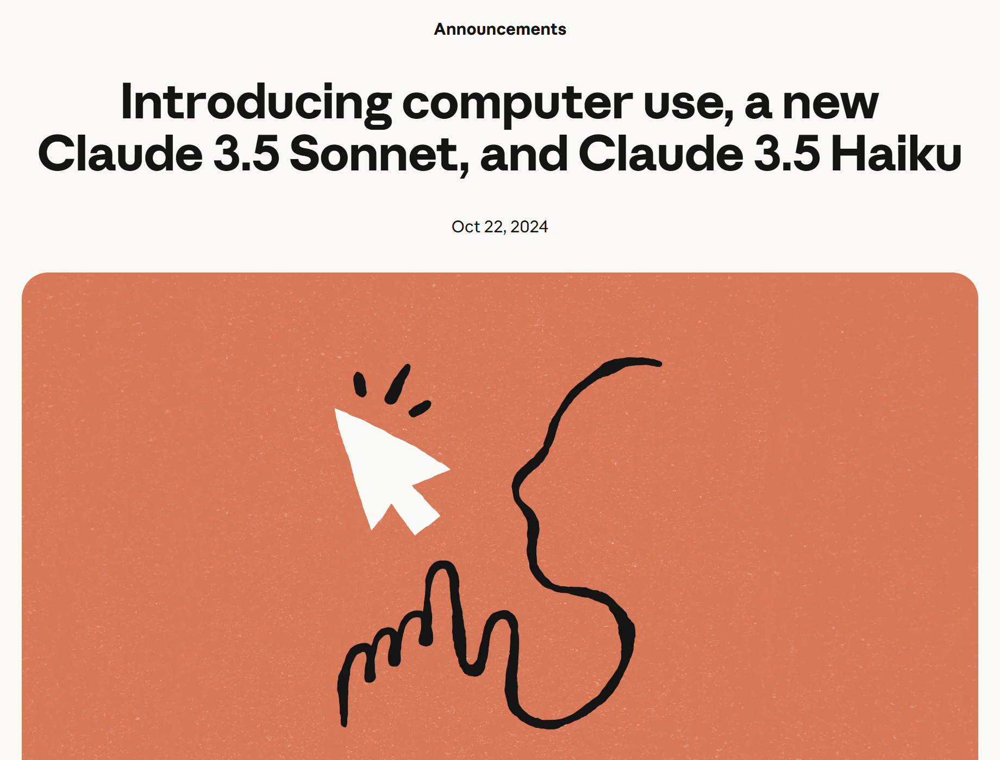
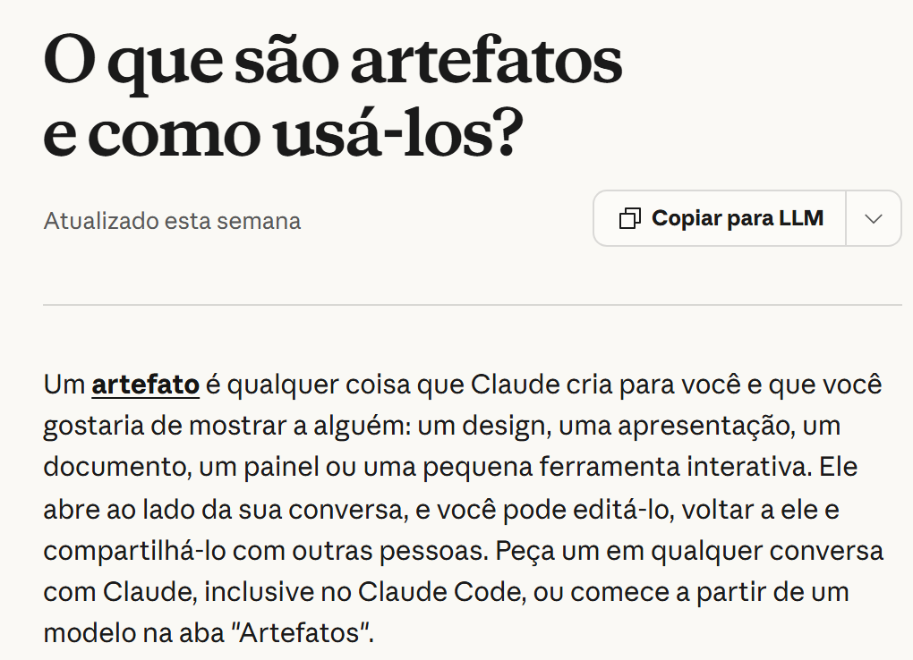
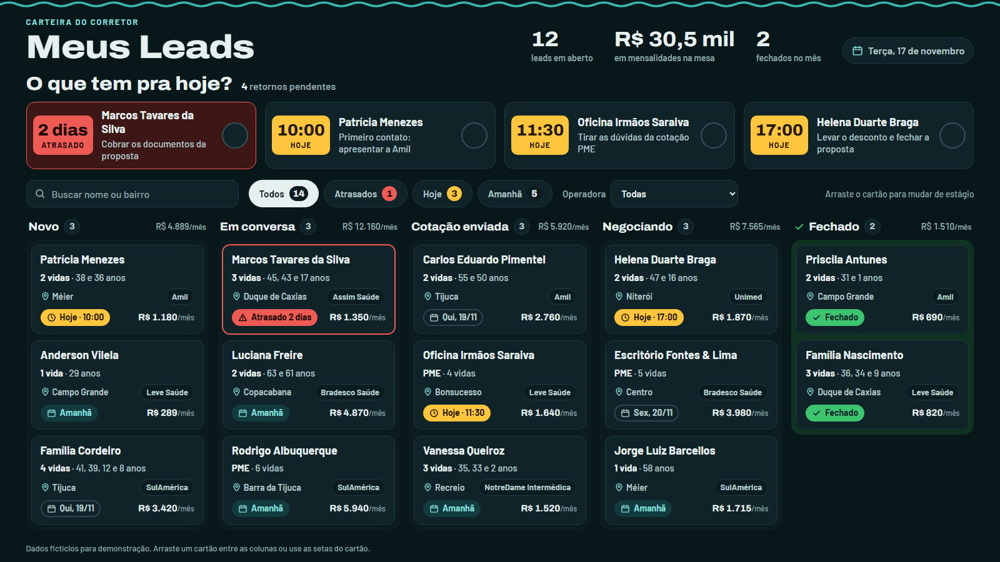
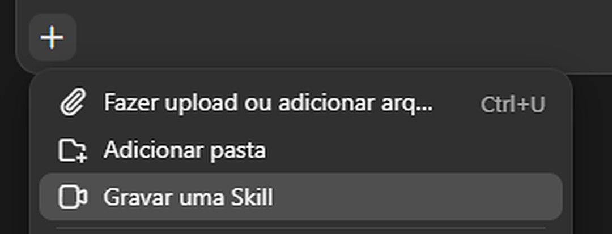
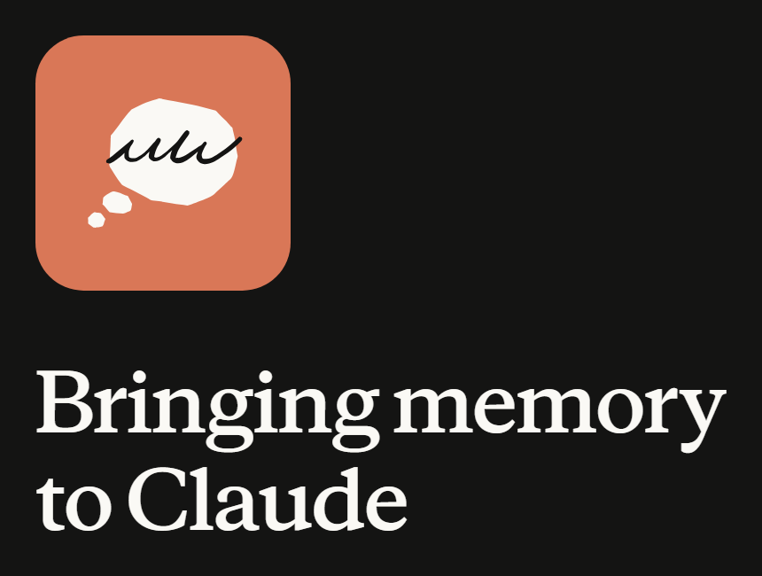
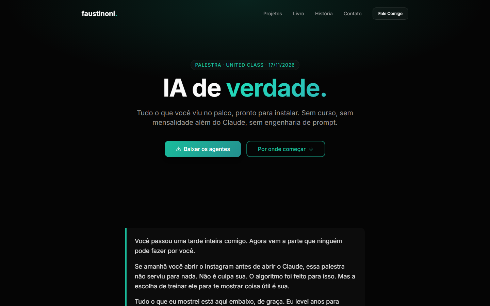
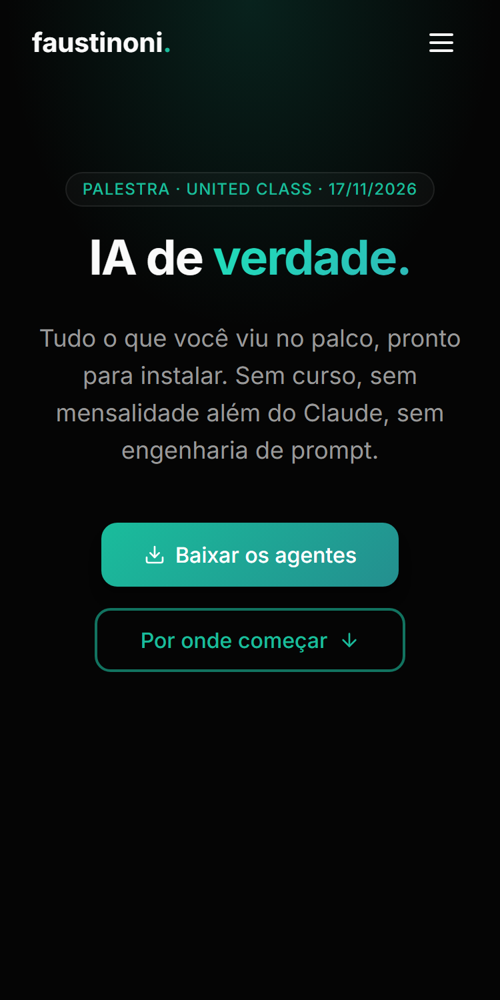

Uma tarde de IA que devolve tempo. Sem programar, sem API.
Vinícius Faustinoni · vinicius.faustinoni.com
Centro de Convenções Edson de Godoy Bueno
Antes da IA, uma história.
Nesta sala
Três campeões.
Dois estão na parede. O terceiro vendia dental.
Deixa eu apresentar os três.
Na parede
Dr. Edson Bueno
Fundador da Amil
ficou quatro anos na mesma 4ª série.
Na parede
Sebastião Batista
Presidente da United
começou vendendo plano individual na Amil.
No palco
Eu
Vinícius Faustinoni
vendia plano dental.
Ninguém nesta sala começou pelo currículo.
A minha começa com 27 reais.
Primeira comissão
R$ 27
Comecei vendendo dental. Quem me colocou nisso foi a minha mãe.
Depois veio a saúde. E o plantão, com ela.
2 kg
de tabelas.
A pastinha do plantão. Ela volta hoje à tarde.
Até que eu ouvi duas palavras.
Tráfego pago.
Ouvi o termo no YouTube e apostei tudo numa mentoria. O dinheiro voltou.
E veio o problema que todo corretor quer.
100%
Comecei a pagar 100% da comissão para os amigos venderem, e eu ficava com o bônus.
Era falta de tempo. E, sem perceber, eu virei outra coisa.
Sem querer
Supervisor.
Pessoas atendiam por mim e eu comissionava. Virei supervisor sem curso e sem crachá.
Só que o dia continuava com 24 horas.
Todo dia
04:00
Eu acordava às 8 e passei a acordar às 4: +1.400 horas por ano.
E eu não era o único acordado.
Dr. Edson dormia 4 horas.
Eu acordo às 4.
Cada um achou o seu tempo. O meu foi às 4 da manhã.
Só que tem uma diferença.
A diferença entre nós
uns 10 bi.
Foi o preço da Amil em 2012. Detalhe técnico.
Mas uma coisa a gente tinha em comum.
Cartão de visita · anos 80
Gerente de treinamento
Ele treinava gente. Eu também.
O Batista deu a esta sala o nome dele: a Amil foi feita treinando gente.
Quando eu achei que tinha entendido o jogo…
BOOM.
Veio o boom das IAs: tudo o que eu aprendi virou superpoder.
E a minha antiga equipe? Tem dona.
Ela, lá atrás
"Filho, vem vender dental."
Eu, anos depois
"Mãe, vira supervisora."
Minha antiga equipe hoje é da minha mãe. Ela virou supervisora.
Enquanto isso, eu fui construindo.
Disparador
Maya
Ayla
CRM de leads
Propostas
Simulador
Mapa Hospitalar
Associações
CyberNanda
Cyber Bati
Corretoras, operadoras, associações de veículos. E dois que vocês conhecem.
Uma pergunta rápida para a sala.
A ferramenta que você usou hoje de manhã…
Proposta, antecipação, dúvida de carência: alguém aqui usou uma delas hoje?
Sabem quem fez?
fui eu.
Construí cada um deles.
Mas que IA é essa? Capítulo 2.
Capítulo 2 de 9
O que é IA
Sem aula de faculdade: de onde veio e por que agora é diferente.
Ela não chegou ontem.
Onde estamos?
Antes de 2022
URA
Nov/2022
Chat
2023–2024
Prompt
Out/2024 →
Agentes
A IA não chegou ontem: URA, chat, prompt. E agora, a era dos agentes.
Começa pela URA. Levanta a mão quem já fez isso.
Quem nunca gritou
ATENDENTE!
Quem aqui já gritou isso para o telefone? Levanta a mão.
Até a IA aprender a usar o computador.
Out/2024 · o Claude usa o computador
Agentes.
Ele olha a tela, move o mouse, clica e digita. Hoje, no seu Chrome.
Em corretorêsAgente = funcionário. Não só responde: faz.

Do jeito que todo mundo aqui entende.
Era do chat
GPS
Te diz a rota. Quem dirige é você.
Hoje
Era dos agentes
Uber
Você diz aonde quer chegar. E senta atrás.
Ninguém precisa aprender a dirigir a IA. Precisa saber aonde quer chegar.
E isso muda quem ganha o jogo.
Na era do chat ganhava quem sabia escrever. Na era dos agentes ganha quem sabe delegar.
E os supervisores já sabem
Vocês passaram anos gerenciando gente. Agora vão gerenciar agentes.
E quem faz essas IAs?
OpenAI · a dona do
ChatGPT.
A que todo mundo conhece. Abriu a era do chat.
×
Anthropic · a dona do
Claude.
A que eu uso para tudo. Conversa como o ChatGPT e faz o trabalho.
Como as duas maiores operadoras do Rio brigando por cliente. Quem ganha é você.
E qual eu uso para tudo? Capítulo 3.
Capítulo 3 de 9
Contratando o Claude
Quem é, quanto custa, por que assinar e como falar com ele.
Primeiro, a pergunta de sempre: quanto custa?
Claude · da Anthropic
FreeR$ 0
Pro faz sozinho daquiR$ 110
Max · 5x o ProR$ 550
Ultra · 10x o ProR$ 1.100
ChatGPT · da OpenAI
FreeR$ 0
GoR$ 39,99
Plus faz sozinho daquiR$ 99,90
Pro · a partir deR$ 525
Por mês. Para a IA trabalhar sozinha: Claude Pro ou ChatGPT Plus.
Com sinceridade: em que nível vocês estão?
Em que nível você está?
Nível 1
Pergunta no navegador
Faz perguntas no ChatGPT, pelo site.
Nível 2
Baixou no computador
E já automatiza algumas coisas.
Nível 3
Sabe que ele controla
O navegador e o computador.
Nível máximo
Manda a IA fazer o processo
Do começo ao fim. Você só confere.
Um exemplo de cada. Nível 1.
Nível 1
Pergunta no navegador.
ChatGPT pelo site. Ele responde, você faz o resto.
No navegador
Escreve uma mensagem educada para cobrar um cliente que sumiu depois da cotação.
Claro! Aqui está a mensagem. É só copiar e mandar.
Ele responde. Quem copia, cola e manda é você.
E o nível 2?
Nível 2
Baixou no computador.
Já automatiza algumas coisas, nos seus arquivos.
App no computador
Na pasta Propostas, renomeia cada PDF com o nome do titular e monta uma planilha com nome, operadora e valor.
Pronto: 32 arquivos renomeados e a planilha salva na pasta.
Ele mexe no seu computador. O portal e o WhatsApp ainda são com você.
E o nível 3?
Nível 3
Sabe que ele controla.
O navegador e o computador. Ele entra no portal por você.
App no computador
Abre o simulador da SulAmérica no meu navegador e cota um plano para um casal de 34 e 36 anos, no Rio.
Cotação feita. Aqui estão os 3 planos mais baratos para o casal.
Ele entra e faz. Mas é uma tarefa por vez, e você dita cada uma.
E o nível máximo? Olha a diferença.
Nível máximo
Você manda o processo inteiro
O meu navegador tem o meu WhatsApp Web logado. No meu WhatsApp tem uma conversa com o cliente Paulo. Ele mandou dados e uma documentação para fazer um cadastro de Leve Saúde. Acessa o portal da Leve e faz o cadastro usando a documentação que ele enviou, selecionando o plano que ele escolheu.
1Abre o WhatsApp Web
2Lê a conversa do Paulo
3Baixa os dados e a documentação
4Entra no portal da Leve
5Cadastra com o plano escolhido
Você não dita os passos. Você pede o resultado.
Para chegar lá, instala. Celular na mão.
Pesquise agora no YouTube
como instalar o Claude no computador
Claude in Chrome como usar
Celular na mão. Eu espero. Vou contar todas as buscas da tarde.
Instalou? Agora, o que eu escrevo?
E agora, o que eu escrevo?
Diga o que você quer como diria para um funcionário seu.
Vocês já fazem isso todo dia
Olha a diferença entre 2023 e hoje.
2023 · prompt de curso
Aja como um especialista em vendas de planos de saúde com 20 anos de experiência no Rio de Janeiro. Use tom persuasivo e gatilhos mentais. Responda em tópicos. Não use emojis. Considere que o cliente tem 46 anos, mora no Méier, quer enfermaria e aceita coparticipação. Monte uma tabela com três opções, compare preço e rede credenciada, não invente valores, pense passo a passo, revise antes de responder, use no máximo 300 palavras e, por favor, seja criativo, mas não muito, e...
×
Hoje · era dos agentes
"Cota pro meu cliente de 46 no Méier."
E se não ficar do jeito que você queria?
Não gostou?
Fala.
Como falaria com o corretor: sem fórmula, sem refazer tudo.
"Ficou formal demais."
"Faz mais curto."
Agora, as primeiras tarefas.
Capítulo 4 de 9
Primeiras tarefas
Uma frase vira ferramenta: painel e site. Nada ao vivo.
A primeira tem um nome estranho.
Artefato
Não é texto.
É ferramenta.
Você pede, ele monta, você usa: painel, planilha que calcula, controle de leads.
Em corretorêsArtefato = ferramenta pronta, que abre no navegador.

O primeiro é do corretor.
Corretor
Meus Leads.
Peço nome, telefone, operadora, estágio e próximo contato. Sai o quadro por estágio.

Para não esquecer: duas buscas.
Pesquise agora no YouTube
Claude artefatos como criar
Claude dashboard com artefatos
Uma ensina a criar; a outra mostra dashboard pronto. Eu espero.
E site? Faz. Mas tem jeito errado de pedir.
Você pede ao Claude
"Faz um site bonito."
=
O cliente pede a você
"Um plano bom e barato."
Pedido vago, resultado qualquer. Vocês sabem o que respondem para esse cliente.
O que muda o resultado é uma coisa só.
4 a 6
sites de que você gostaEle olha, entende o estilo e segue.
Celular na mão: duas buscas.
Pesquise agora no YouTube
como criar um site animado com o Claude
como publicar site feito no Claude
Um ensina a fazer. O outro, a pôr no ar. Eu espero.
Agora, o capítulo mais importante da tarde.
Capítulo 5 de 9
O que é um agente
O ponto da tarde. É aqui que tudo se junta.
O que é um agente, em uma frase.
Regraso que ele faz e o que nunca faz
+
Habilidadeso passo a passo de cada tarefa
+
Personalizaçõesseu nome, seu jeito, seus sistemas
=
Uma pastatudo isso, salvo e pronto para ler
E como se ensina uma habilidade? Sem escrever.
Mais uma forma de ensinar
Gravar
uma Skill.
Você faz a tarefa na tela e explica falando. O Claude transforma em skill.

Zoom: o + e o Gravar uma Skill
Em vez de escrever o passo a passo, você mostra.
Quer ver isso acontecendo? Assiste.
Na prática · 2 minutos
O supervisor ensina. O agente aprende.
1Diz quem é o agente
2Ensina a tarefa uma vez
3Vira uma habilidade
4Faz sozinho e resume
Assista · 2min35
E se o agente já vier pronto, numa pasta?
1Ensinaa digitar a proposta no portal, uma vez
2Vira agenteuma skill e um agente especialista nisso
3Exporta"exporta esse agente numa pasta"
4O colega lê"leia esta pasta", no Claude dele ou em outra IA
Ensinou uma vez? Vira uma pasta. E a pasta passa de mão em mão.
Para entender skill com calma: uma busca.
Pesquise agora no YouTube
o que são skills no Claude
Explica skill com mais calma do que eu tenho aqui. Eu espero.
E vocês nem começam do zero.
O que vocês recebem hoje
Um funcionário
já treinado por mim.
Na verdade, dois: o Copiloto do Corretor e o Agente do Supervisor. E um bônus: o Agente de Imagens.
Começo pelo do supervisor, o rei do F5.
Entra nos portais
Qualicorp, QV, Amil… no seu Chrome, com o seu login
Confere o status
de cada proposta da equipe: implantou? voltou?
Dá entrada
do jeito da sua empresa: na primeira vez, você ensina
Acha as pendências
e escreve o aviso do corretor daquela proposta
Resume e organiza
tudo pronto para você, às 7 da manhã
A ronda que você faz no F5, feita por ele. E entregue organizada.
E o do corretor?
Cota
no simulador, do jeito que você fala: "46 anos no Méier"
Dá dicas de venda
o que oferecer, como contornar a objeção: para você vender
Tira as suas dúvidas
carência, coparticipação, rede. Sem inventar valor.
Lembra o retorno
de manhã: "o que tem pra hoje?"
Aprende o novo
simulador novo? "me manda o link que eu aprendo"
Fala com o cliente
só se você pedir: abre o WhatsApp Web e envia. Nada sai sem o seu ok.
Ele trabalha para o corretor. Com o cliente, só quando você pede.
E dá para ter um para cada assunto.
Cada sessão,
um especialista.
Uma conversa para cada assunto. Ela lembra do que aprendeu ali.
Cotação SulAmérica
Status das propostas
Dar entrada
Anúncios
Uma sessão para cada trabalho. Cada uma vira um agente treinado.
E os meus, como chegam? Lembra da pastinha?
Lembra da pastinha de 2 kg?
Ela voltou.
Trabalhando.
Os dois funcionários vêm numa pasta. Dentro dela, tudo o que eles precisam saber.
Antes de ver os dois trabalhando: duas buscas.
Pesquise agora no YouTube
o que são agentes de IA
Claude Cowork como usar
Cowork é o nome do Claude que trabalha sozinho. Eu espero.
Agora, os dois trabalhando. Primeiro, o corretor.
Capítulo 6 de 9
O agente do corretor
O trabalho do corretor, feito para o corretor.
Um exemplo só, do começo ao fim.
Um exemplo, do começo ao fim
Marta, 46.
Mora no Méier.
Viu um anúncio, pediu cotação e quer um hospital perto de casa.
Começa pelo anúncio.
Primeiro, um presente · lembra da pastinha?
Tabela vira
anúncio.
A tabela que pesava na pastinha vira anúncio em minutos, com a sua cara.
Antes de criar, ele pergunta.
Pra quem?
Qual hospital?
Qual plano?
Chamada ou tabela?
Qual formato?
Seu contato?
É o briefing que ninguém faz: pra quem é esse anúncio?
E quem desenha a imagem?
O Claude contratou o ChatGPT como estagiário.
Ele usa a melhor ferramenta pra cada trabalho
E o carrossel? O assunto vem do seu WhatsApp.
Você e o Claude · WhatsApp Web e Instagram
Olha as minhas conversas no WhatsApp com os números abaixo, analisa as dúvidas que mais se repetem, cria os próximos 10 conteúdos e já posta no meu Instagram.
As dúvidas que mais aparecem: carência, coparticipação, MEI e 59 anos. 10 carrosséis prontos. Posso postar?
5 coisas que ninguém te conta sobre carência
Coparticipação: vilã ou heroína?
Plano de saúde para MEI: pode?
O que muda aos 59 anos
A pergunta que vocês respondem vinte vezes no WhatsApp vira carrossel.
Celular na mão: duas buscas.
Pesquise agora no YouTube
carrossel com Claude
como instalar skill no Claude
Celular na mão. Eu espero.
Anúncio e carrossel prontos. E a cotação?
Na prática
Você pede.
Ele cota.
Do jeito que você fala. Nada vai para a Marta sem o seu ok.
Você e o Copiloto do Corretor
Cota pra Marta, 46, Méier. Ela quer hospital perto.
Três opções que atendem o Pasteur, no Méier. PDF pronto. Posso mandar?
Pode mandar.
E o supervisor? Agora é a vez de vocês.
Capítulo 7 de 9
O agente do supervisor
O trabalho do supervisor, feito para o supervisor.
Começa pelo dia de vocês.
O dia do supervisor
F5, F5, F5.
O dia inteiro no portal: implantou? voltou com pendência? cadê o PDF?
E se alguém fizesse essa ronda por você?
Só do supervisor
Agente do
Supervisor.
Faz a ronda nos portais, dá entrada e cadastra proposta nova.
E cadastrar proposta, como funciona?
Ensinauma vez, em cada portal
Preenchee anexa os documentos da sua pasta
Pausavocê digita CPF, RG, cartão
Enviasó com o seu "pode enviar"
Você ensina uma vez. Nas próximas, é uma frase.
E tudo chega numa mensagem só, às 7.
7h, antes do café
A ronda
já feita.
O aviso do corretor está pronto. Só sobra o que depende de você.
A da Marta voltou com pendência: falta comprovante de residência. O aviso pro corretor está pronto, é só copiar.
Copiei e mandei.
Agora, a parte que deixa tudo no automático.
Capítulo 8 de 9
No automático
Ele lembra de você, entra nos seus apps, trabalha no horário e obedece pelo celular.
Começa pelo que ele guarda de vocês.
Você ensina.
Ele guarda.
Qualquer um aqui ensina o Claude.

Tem alguém nesta sala que ensinava como ninguém.
Dr. Edson · desde os anos 80
Um livro. Sete sorteados.
O livroDuas vezes por ano, ele escolhia um livro de gestão (um deles, Como as Gigantes Caem, do Jim Collins) e dava para uns 400 executivos da Amil.
O sorteioNo dia do encontro, sorteava sete, na hora, para subir no palco e apresentar um capítulo.
O resultadoNinguém sabia quem ia subir. Então todo mundo lia.
E vocêsTambém vão ganhar um livro hoje. Ele vem no final. Mas antes: conhecimento que ninguém usa evapora.
Celular na mão: duas buscas.
Pesquise agora no YouTube
memória do Claude como funciona
projetos no Claude como usar
Celular na mão. Eu espero.
Agora, a porta da frente dos seus apps.
Conector:
liga ele ao app.
Direto no seu e-mail, na sua agenda, nas suas pastas da nuvem. Sem clicar tela por tela.
O navegador entra pela janela. O conector entra pela porta.
Agora: trabalho com horário.
Ensina uma vez.
Marca o horário.
Toda hora, todo dia, só dias úteis ou toda semana. Ele começa sozinho.
Exemplo do supervisor
Todo dia às 19h, olha os grupos das operadoras no meu WhatsApp Web e me faz um resumo das novidades.
E se você estiver longe do computador?
Do celular,
você manda.
No trânsito, na fila, no plantão. Ele trabalha e te avisa.
Último capítulo.
Capítulo 9 de 9
Entre nesse mundo
A tarde está acabando. Agora eu quero que vocês fiquem nesse mundo.
E tem uma coisa que ninguém conta.
Tudo de hoje já está no YouTube
De graça.
Mas o YouTube de vocês nunca vai mostrar. Sabem por quê?
Sabem por quê?
3
likes em dancinhaOntem à noite. O algoritmo anotou.
Então treine o algoritmo, em vez de ser treinado.
Pesquise de propósitouma busca por dia, até o fim
"Não tenho interesse"nos três pontinhos, sem dó
Troque a sala de esperafila, Uber, almoço: o que você pesquisou
O algoritmo aprende com o que você termina, não com o que você começa.
Treinar. Olhem para a parede.
Lembram do cartão dele?
Treinem
a máquina.
Ele treinava gente. Vocês começam treinando o algoritmo.
E vocês já começaram. Quantas buscas hoje?
13
buscas diferentesAmanhã de manhã, o YouTube de vocês vai estar diferente.
E onde eu te sigo para ver mais?
Agora sim, o momento de pedir:
@viniciusfaustinoni
Me sigam no Instagram. Todo palestrante termina assim. Eu também.
Só um aviso.
Só um aviso
Quem responde lá
é um agente.
Resposta minha, de gente, lá não vem. Ele posta, ele responde. Eu fico com o tempo.
E tudo de hoje está num endereço só.
Tudo de hoje está aqui
vinicius.faustinoni.com
/palestraunited
Fotografem a tela ou apontem a câmera para o quadrado.
O que tem lá?
Tudo.
De graça.
Os 2 funcionários, o Agente de Imagens, as 13 buscas e o livro.


E tem mais um presente.
Mais um presente
O meu treinamento, de graça para vocês.
O treinamento completo de tráfego pago. 30 aulas. +1000 alunos.
Criativo com IA
logo, anúncio e vídeo, sem Canva
Lead que não é curioso
formulário que filtra
Campanha por hospital
o anúncio no bairro certo
Remarketing e PJ/MEI
quem viu, volta
Google
Perfil da Empresa e Pesquisa
Do lead à venda
abordagem e follow-up com IA
10 minutos por dia
lead barato × lead que fecha
Objeções e 30 dias
a IA responde, o plano está pronto
Meta, Google e IA, do zero. Tutor de IA 24 h e certificado no final.
Para entrar, um cupom.
Cupom
DESCONTOTOTAL
Em tpc.faustinoni.com, no pagamento: o desconto é total.
R$ 297
R$ 0
o treinamento inteiro
Para quem está aqui hoje: o treinamento sai de graça.
Agora, olhem para a parede uma última vez.
Vocês começam amanhã com
Um computador.
E o Claude Pro.
Ele começou com uma clínica endividada. Vocês começam com muito mais.
E se travar em alguma coisa…
Travou? Pesquisa. Travou de novo? Pergunta ao Claude. Ainda travou?
Eu tenho tempo.
Pode falar.
Só mais uma coisa.
Até hoje… tudo isso era impossível…
Mas como todos aqui já sabemos…
“SÓ O IMPOSSÍVEL INTERESSA”
→ Espaço PageDown avança · ← PageUp volta número + Enter vai para o slide · Home/End início/fim B ou . tela preta · F tela cheia P modo apresentador (notas, próximo slide, cronômetro) Slide com vídeo: avançar toca · K pausa/retoma ? mostra/esconde esta ajuda